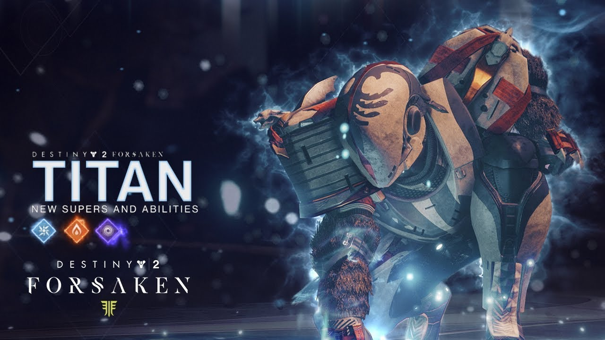
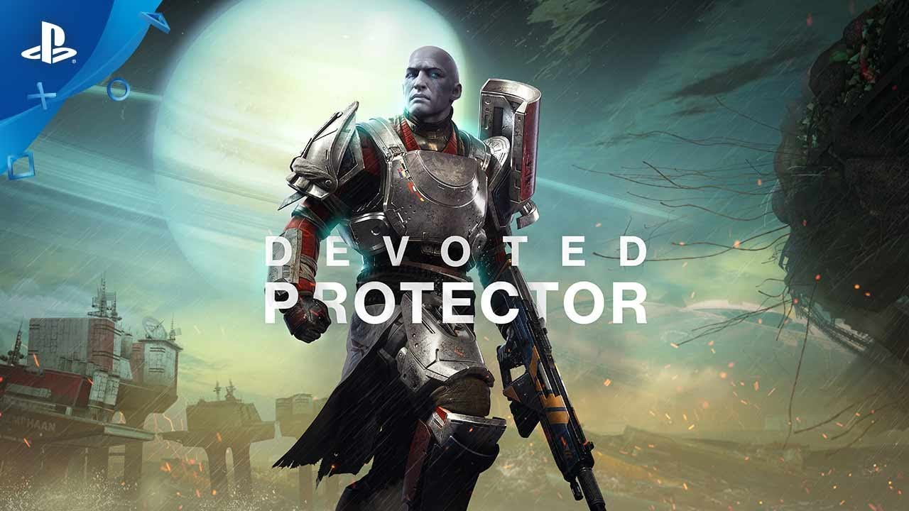

Titans are a class that at first were already seen as strong however as time progressed the feats of strenghts they proceeded to attain is almost immeasurable. With this new found strength their popularity rose and are a force to be reckoned with.

Titans are the tanks of destiny. They bring the ability to deal massive ammounts of damage and to take massive ammounts of damage for their team. With the ability to create shields for damage and protection and to be able to clear out rooms with a press of a button you bring a lot to the table.
As a titan you swear to your mark and learn under your mentor Zavala. Zavala is an awoken (alien humanoid species) titan that is curagious, commanding, and an overall leader that makes sure his feelings don't get involved in between the mission.
 Meet ZavalaWhen it comes your armor, thats where your power truly shines. Titans have armor that increases what they do by ten fold. Armor that gives shields off of kills, armor that increases your range, armor that increases your speed and the list goes on. Armor is what takes from being great to being almost unstoppable.


So are you going to claim your titan mark, or are you going to keep searching?
Home